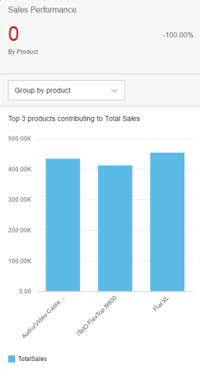
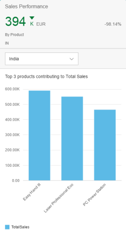

Multiple, individual analytic chart cards can be combined and displayed within a single card via the view switch feature.
The view switch feature is enabled through a dropdown menu below the header area. Applications will have to add configurations to the application descriptor (manifest file) where they can specify the different annotations that make up each of the individual cards, which in turn makes up the combined card. The following is an example setting for one such card:
"card01": {
"id": "card3",
"model":"salesOrder",
"template":"sap.ovp.cards.chart.analytical",
"settings": {
"title": "Sales Order",
"subTitle": "",
"entitySet": "SalesOrderSet",
"tabs": [
{
"chartAnnotationPath" :"com.sap.vocabularies.UI.v1.Chart#Eval_by_Country",
"dataPointAnnotationPath" :"com.sap.vocabularies.UI.v1.Chart#Eval_by_Country",
"selectionAnnotationPath" :"com.sap.vocabularies.UI.v1.SelectionVariant#Eval_by_Country",
"presentationAnnotationPath" :"com.sap.vocabularies.UI.v1.PresentationVariant#Eval_by_Country",
"idenfiticationAnnotationPath" :"com.sap.vocabularies.UI.v1.Identification#Eval_by_Country",
"value": {{by_Country}}
},
{
"chartAnnotationPath" : "com.sap.vocabularies.UI.v1.Chart#Eval_by_Supplier",
"selectionAnnotationPath" :"com.sap.vocabularies.UI.v1.SelectionVariant#Eval_by_Supplier",
"dataPointAnnotationPath" :"com.sap.vocabularies.UI.v1.Chart#Eval_by_Supplier",
"presentationAnnotationPath": "com.sap.vocabularies.UI.v1.PresentationVariant#Eval_by_ Supplier",
"idenfiticationAnnotationPath" :"com.sap.vocabularies.UI.v1.Identification#Eval_by_Supplier",
"value": {{by_supplier}}
}
]
}
}It's recommended to only use this feature to show content that is very similar and not to use this for unrelated views or have one view that serves as a drilldown page for other views.
Group By
Group by could be used if two analytic cards have the same filter and sort criteria, but differ in their group by clause. For example, one card could show show sales by supplier and the other by region. In this case, we could have a single analytic card instead of two. The card title could be "Sales" and the tab entry of the manifest would have two records – one with value "By Supplier" and the other with value "By Region". Both would have the same selection criteria, but would differ in the presentation variant.
The first records would correspond to a presentation variant that has the value "By Supplier" for the GroupBy property, whereas the second one would have the value "By Region". The identification and chart annotation path would also be different for each of the tab entries.
Sort By
Sort by could be used if two cards have the same filter and navigation criteria, but differ in their sort criteria. For example, both cards show sales grouped by suppliers, but one card shows the top three supplies and the other card shows the bottom three. In this case, we could have a single card instead of two cards and the card title could be "Sales by Supplier" and the tab entry of manifest could have two records – one with value "Top 3 Suppliers" and the other with value "Bottom 3 Suppliers". Both would have the same selection criteria, but would differ in the presentation variant.
The first records would correspond to a presentation variant that have SortOrder and MaxItems that correspond to the top three records, whereas the presentation variant of the second record will have a SortOrder and MaxItem that correspond to the bottom three.
Filter
Filter could be used if two cards will have the same presentation variant and navigation criteria, but differ in their filter set. For example both cards shows "Sales" in Region="Europe" and Year="2016", but the first card shows Sales of Country="DE" and second shows Sales of Country="FR". In this case we could use a single card titled "Sales – Europe 2016" and the tab entry of manifest would have two records – one with country values "Germany" and "France".
Both would have the same presentation, identification and chart/line item annotation, but would differ in their selection annotation due to different filter sets (first card has filters Region="Europe", Year="2016" and Country="DE", whereas the second card would have filters Region="Europe", Year="2016" and Country="FR")
Examples
|  |  | |
|
Group By Card |
Sort By Card |
Filter Card |